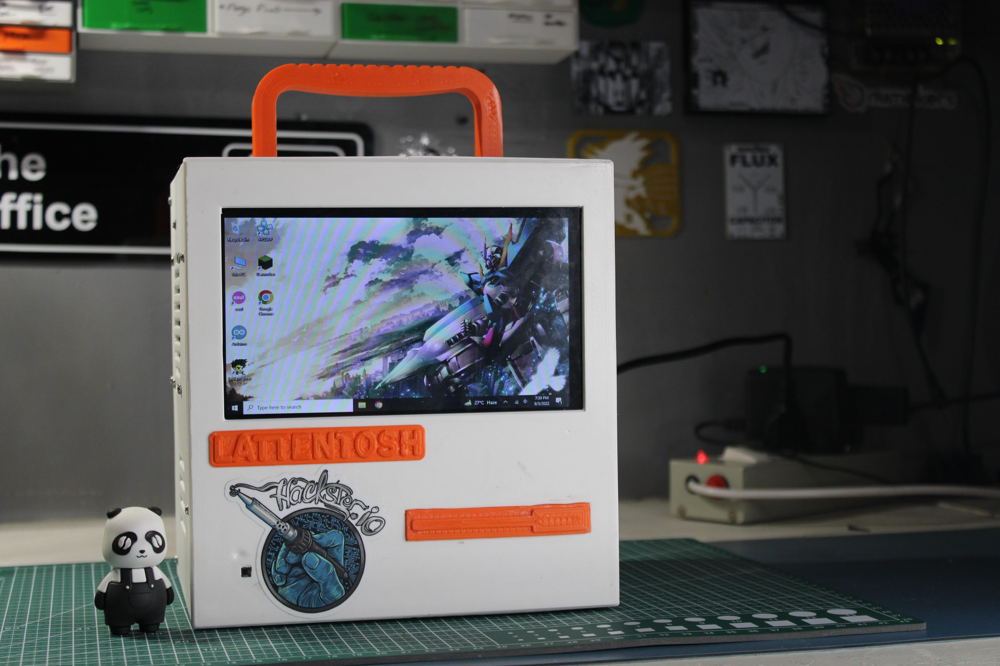
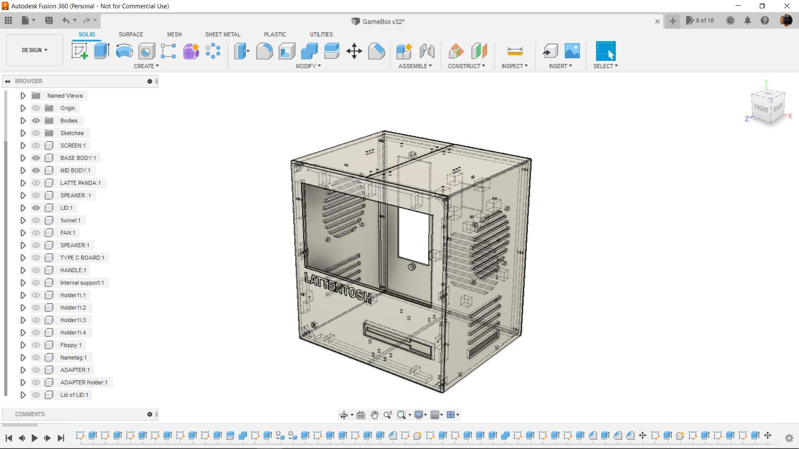
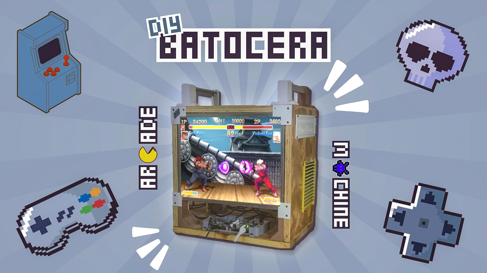
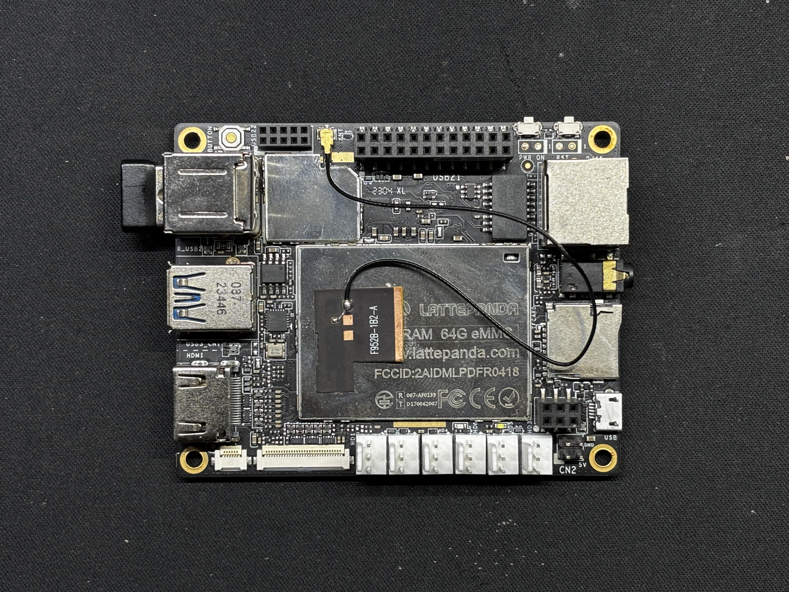
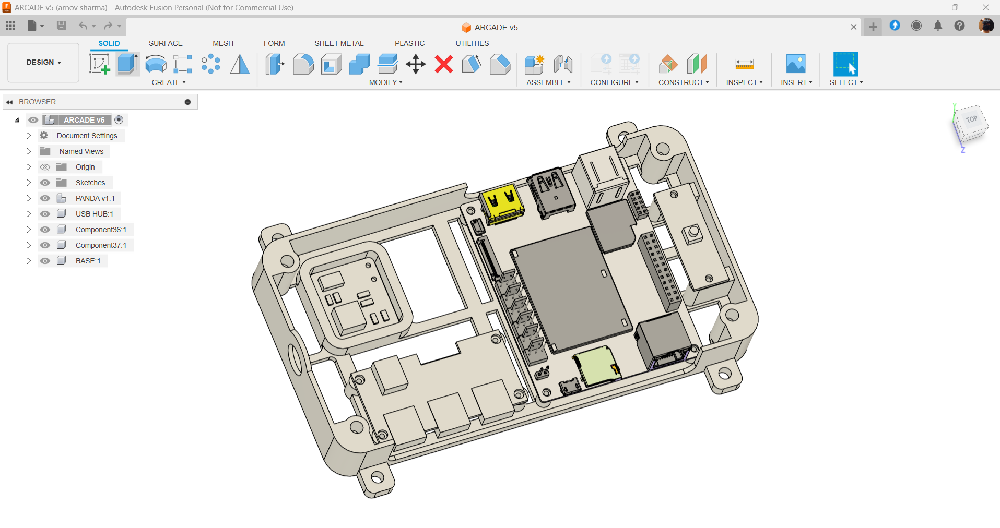

CMYK 3D Printer


Hey Guys how you doin!
So here's something super cool, a full-size Macintosh 128K-inspired PC completely 3D Printed and made from Scratch.
The heart and brain of this project is a Latte Panda 3 Delta which is a Single Board computer powered by an Intel N5105 11th Gen Mobile Processor, it has 8GB LDDR4 Memory with 64GB eMMC onboard.
As for the display, I'm using a 7-inch HD Display from a previous project that was a Handheld Gaming device. That setup was functional but it lacked power as it had Raspberry Pi 3B+ with only 1GB Ram.
However, this current setup more is much powerful in terms of processing power, RAM, Storage, and other stuff.
For the PC Enclosure, I've modeled the whole thing by taking inspiration from the original 1980s Macintosh 128K PC.
Fusion360 was used to prepare the model and I then exported everything and use my good old ender 3 for printing every part with White and Orange PLA.
This Bad boy can run all sorts of stuff, yes it can even run DOOM!
This Instructables is about the whole built process of this LATTEintosh PC so let's get started.
Auto Sensor Farming System



Greetings everyone and welcome back, Here's something. Fun and nostalgic. Right now, we are using our recently developed Batocera Arcad Box to run Roadrash using a PS1 emulator.
We're using Batocera Linux, which is an open-source and completely free retro-gaming distribution designed to turn any computer or single-board computer into a gaming console.
Here, we booted Batocera on our fairly old Latte Panda V1 single-board computer, which was released in 2015 and had an Intel Atom x5-Z8350 quad-core processor with 4GB DDR3L RAM. This processor was powerful for an SBC at the time, but it is not very effective today if we want to use it to run Windows effectively.
Making a retro arcade that can simulate systems like the PS1, PS2, PSP, SEGA, Gameboy, and others without breaking a sweat was one of the best uses for this old SBC.
We created a compact box-like enclosure that holds the Latte Panda V1, a USB Extender Hub that allows us to connect multiple controllers to this device for multiple players, and a specially designed power circuit that requires 12V input and provides a steady 5V/3A output to operate the Latte Panda to its maximum capacity.
We used one of our previous projects, the woodwork fusion, for the project's body and screen. To provide room for the arcade box, the PC's motherboard and other components were taken out.
After that, we put our arcade box inside the PC frame and put everything together to create the ideal arcade system that runs Linux and Batocrea.
This Instructables is about the whole build process of this project, so let's get started with the build.